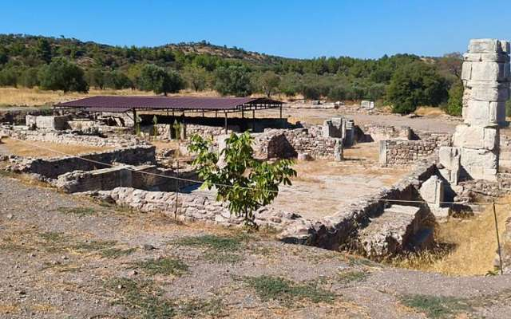

Tag eins beginnt in Troja und im Troja-Museum nebenan und führt über Alexandria Troas und das Smintheion bis zum Sonnenuntergang nach Assos. Tag zwei folgt den Spuren der Schlacht von Gallipoli zu den Batterien an beiden Ufern der Dardanellen und zur Festung Kilitbahir.
Tag 1

Troja wurde durch Homers Ilias zur berühmtesten Stadt der Weltliteratur.

Das Troja-Museum am Eingang des Dorfes Tevfikiye nahe dem antiken Troja besticht durch moderne Architektur: ein aus dem Boden ragender Kubus, der an archäologische…

Alexandria Troas bei Dalyan nahe Ezine an der Ägäisküste war ein großer Hafen, den einer der Generäle Alexanders des Großen gründete und der später nach Alexander…

Das Apollon Smintheion im Dorf Gülpınar ist ein Heiligtum des Apollon „Smintheus“, der mit Mäusen und Seuchen verbunden wurde.

Assos über dem Dorf Behramkale krönt einen Vulkanhügel mit Blick auf den Golf von Edremit und Lesbos.
Tag 2

Die Burg Kilitbahir am europäischen Ufer an der engsten Stelle der Dardanellen ließ Sultan Mehmed der Eroberer im 15.

Die Namazgâh-Bastion in Kilitbahir ist ein wichtiges Glied der Küstenverteidigung auf der europäischen Seite der Dardanellen.
Die Hamidiye-Bastion und das Museum der Geschichte der Kämpfe von Çanakkale befinden sich in einer der Bastionen, die bei der Verteidigung der Dardanellen eine…
Das Informationszentrum zum Epos von Çanakkale auf der Halbinsel Gallipoli vermittelt die Kämpfe von 1915 mit modernen Mitteln.
Das Hilal-i-Ahmer-Nachstellungsgelände von Çanakkale ist eine Freiluftausstellung über die Sanitätsdienste des Osmanischen Roten Halbmonds (heute Kızılay) für…
Fertige, tageweise geplante Routen für Ihre Reiseplanung. Zeiten sind Richtwerte; prüfen Sie vor der Reise Öffnungszeiten und Straßenverhältnisse.